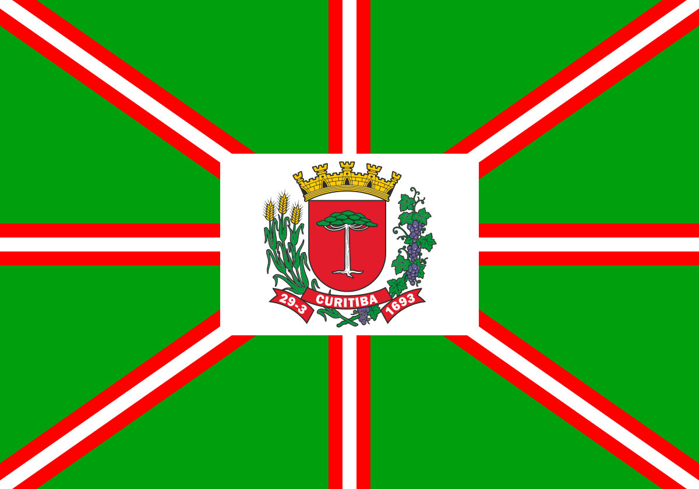

Capitais dos Estados Brasileiros!
Rio Branco - Acre
A cidade do Rio Branco é a capital do Acre e é a sexta maior cidade da Região Norte. A cidade tem uma
população de cerca de 350 mil pessoas, e está a um pouco menos de 3125 km de Brasília. O Rio Branco está
localizado a cerca de 150 metros acima do nível do mar.
Maceió - Alagoas

Maceió é a cidade capital de Alagoas e também é conhecida como “Cidade-sorriso” e “Paraíso das Águas”. O
município se localiza a leste de Brasília, e com mais de 2000 km de distancia. A palavra Maceió é
derivada do tupi, e traduzido fica “lagoa à beira do mar”.
Macapá - Amapá
Macapá é a capital e maior cidade do estado do Amapá. Localizado ao sul às margens do Rio Amazonas, é o único
município brasileiro por onde passa a Linha do Equador. É a quinta cidade mais rica do Norte brasileiro e a
terceira maior aglomeração urbana da região.
Manaus - Amazonas
Capital do estado do Amazo-
nas, Manaus é o maior centro econômico e financeiro da Região Norte.
Localizada na maior floresta tropical de todo o mundo, a Floresta Amazônica. Fundada em 1669 e com população
estimada é de 2 milhões de habitantes.
Salvador - Bahia
Salva-
dor é a capital do estado da Bahia, famosa pela arquitetura, culinária e é uma das cidades
turísticas mais conhecidas do Brasil. Ela é uma das mais antigas cidades da América com maior número de
negros do mundo. Sua população supera três milhões de habitantes.
Fortaleza - Ceará
Forta-
leza é a capital do estado do Ceará. Situa-se nas margens do Riacho Pajeú com
extensão litorânea de 34 km e total de 15 praias. É a sexta maior cidade brasileira e o município
nordestino com a maior influência regional, está entre os 10 países com maior PIB.
Brasília - Distrito Federal
Brasília é a cidade sede do governo do DF.
É a sede dos três poderes do governo federal, além
de hospedar 124 embaixadas de outros países. Conhecida pelo planejamento urbano, que
tem forma de avião, e pela arquitetura dos prédios do governo.
Vitória - Espírito Santo
A cidade de Vitória é a capital do Espírito Santo, uma das três capitais do Brasil localizada em ilha.
Sua população é superior a 330 mil habitantes, o que faz dela a quarta cidade mais populosa do estado. As
praias de Vitória não são extensas, devido ao tamanho da ilha.
Goiânia - Goiás

A cidade de Goiânia é a capital do estado de Goiás. Localizada no centro do estado com área
aproximada de 740 km². Foi projetada para ser a capital política e administrativa
do estado de Goiás. Capital com maior área verde por habitante do Brasil.
São Luís - Maranhão
São Luís é a capital do Mara
nhão, também é conhecida como “Cidade dos Azulejos” e “Ilha do Amor”. É um
grande
ponto turístico e de conexão até outras atrações do estado, como os lençóis maranhenses. Estima-se que há
mais ou menos 1,06 milhões de habitantes na cidade.
Cuiabá - Mato Grosso
Cuiabá é a cidade capital do estado do Mato Grosso. É conhecida, pelos cidadãos locais, como
Cidade Verde, por ter várias áreas arborizadas. Possui população estimada em 576 mil habitantes.
As principais áreas comercias da cidade de Cuiabá são o comercio e a industria.
Campo Grande - MS
Campo Grande é a capital do estado do Mato Grosso do Sul, localizado na região Centro-Oeste do Brasil. O
município é marcado pelo processo histórico da divisão entre o norte e o sul. É uma das capitais menos
populosas do Brasil, com quase 800 mil habitantes.
Belo Horizonte - Minas Gerais

Belo Hori-
zonte é a cidade capital de Minas Gerais, possui como moldura natural a Serra do Curral que
cerca a
cidade. Foi planejada e construída sobre o pensamento positivista, que dava base para o movimento
republicano. É referência histórica e cultural.
Belém - Pará
Belém é o muni-
cípio capital do estado do Pará, tem cerca de 400 anos de história e foi um
importante local durante o período do Ciclo da Borracha. É um centro politico e cultural sua influência
alcança até 8 milhões de pessoas no Pará, Amapá e Tocantins.
João Pessoa - Paraíba

É a capital do estado da Paraíba. Graças à sua privilegiada localização, o ponto mais
oriental das Américas, a cidade é conhecida como Porta do Sol, o lugar do continente americano onde o sol
nasce primeiro. É considerada a terceira capital mais antiga do Brasil.
Curitiba - Paraná

Curitiba é o muni-
cípio capital do estado do Paraná, sendo a mais populosa da região Sul e a oitava do
Brasil. A cidade é conhecida também como Cidade Modelo. Curitiba tem 434,9 km² de área aproximada e com uma
população estimada de quase 1,85 milhões de habitantes.
Recife - Pernambuco
Capital de Per-
nam-
buco, Recife constitui o centro administrativo e de negócios do estado, ocupando
assim
posição de destaque no contexto regional. É o maior pólo de serviços modernos da Região Nordeste.
Sua população totaliza mais de 1,5 milhão de habitantes.
Teresina - Piauí
Teresina é a capital da unidade federativa do Piauí, e é a única capital nordestina que não é banhada pelo
oceano atlântico. A economia dela é uma das maiores do nordeste. A cidade possui uma área de 1.392
km², com uma estimativa de 840 mil habitantes aproximadamente.
Rio de Janeiro - RJ
O Rio de Janeiro é a cidade capital do estado de mesmo nome. Muitas vezes chamada apenas de Rio e conhecida
por seus cidadãos como “Cidade Maravilhosa”, esta capital é a cidade brasileira mais conhecida fora do país
e a maior rota de turismo internacional brasileiro.
Natal - Rio Grande do Sul

Natal é a capital do estado de Rio Grande do Norte, e é a segunda menor capital brasileira, maior
apenas que Vitória no Espírito Santo. É conhecida como Cidade do Sol. É a segunda menor capital do Brasil,
porém tem uma população de 862 mil habitantes estimados.
Porto Alegre - RS

Porto Alegre é a capital do estado mais meridional do Brasil, o Rio Grande do Sul. Possui uma área de quase
500
km², com uma geografia diversificada, com morros, baixadas e um grande lago, o Guaíba. Atualmente, abriga
mais de 1,4 milhão de
habitantes.
Porto velho - Rondônia

Porto Velho é o municí-
pio capital do estado de Rondônia. Além de ser a cidade mais populosa de seu estado, é
a quarta maior em população de toda a Região Norte. A capital faz fronteira com a Bolívia. Possui um numero
estimado de habitantes de 493 mil.
Vista - Roraima

Boa Vista é a capital de Roraima sendo a mais populosa, com mais da metade de toda a população do
estado. Também é a capital mais afastada de Brasília, mais ao norte, e a única que não tem
território no hemisfério sul. A cidade está próxima a 2º linha do Equador.
Florianópolis - SC

Floripa (como é chama-
da cari-
nhosa-
mente), também conhecida como “Ilha da Magia”, é a capital do
estado de Santa Catarina, na Região Sul
do Brasil. O clima instável em conjunto com suas 42 praias, contribui para o intenso movimento turístico
durante todo o verão.
São Paulo - São Paulo

A cidade de São Paulo é a capital do estado, e é o maior centro corporativo, mercantil e financeiro de toda
América do Sul, incluindo América do Sul e o Brasil. É conhecida como “Sampa”, é a cidade mais populosa de
todo hemisfério sul, 7ª mais populosa do planeta.
Aracaju - Sergipe

Aracaju é a capital de Ser-
gipe, também é conhecida como Cidade do Caju. É a capital nordestina com a
menor desigualdade e a cidade cuja população tem hábitos de vida mais saudáveis do País. A área total de
Aracaju é
de 181,86 km², e possui em torno de 623,7 mil habitantes.
Palmas -Tocantins

Capital do estado de Tocan-
tins. É a capital mais nova do Brasil, foi completamente planejada para ser a
capital do Tocantins e também é a segunda capital com o maior da Região Norte brasileira. Tem população
estimada em 265,4 mil habitantes.